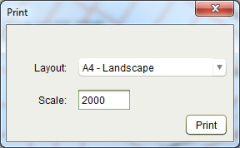

The Print Tool
can be used to export the current view of the map to a PDF file for printing. Before
printing, you should setup the map with the layers you want to include in the print by
turning them on or off. Once you have arranged the map with the information you want on the
print, click the
Print Tool
can be used to export the current view of the map to a PDF file for printing. Before
printing, you should setup the map with the layers you want to include in the print by
turning them on or off. Once you have arranged the map with the information you want on the
print, click the  Print Tool. This will display the Print dialog where you can select the layout (A3,
A4 or A5 in Portrait or Landscape) and change the map scale.
Print Tool. This will display the Print dialog where you can select the layout (A3,
A4 or A5 in Portrait or Landscape) and change the map scale.

Map Print dialog
Click the Print button to generate a document containing the image of the map. Using the Report Viewer, you can save the print in several formats including PDF, DOCX and HTML or print a hard copy.
Spatial Print
Note that the print templates (i.e. A3, A4 and A5) can be can be reconfigured to match those required by the land administration agency. Also note that this tool is only available to users that have the Map Print security role.